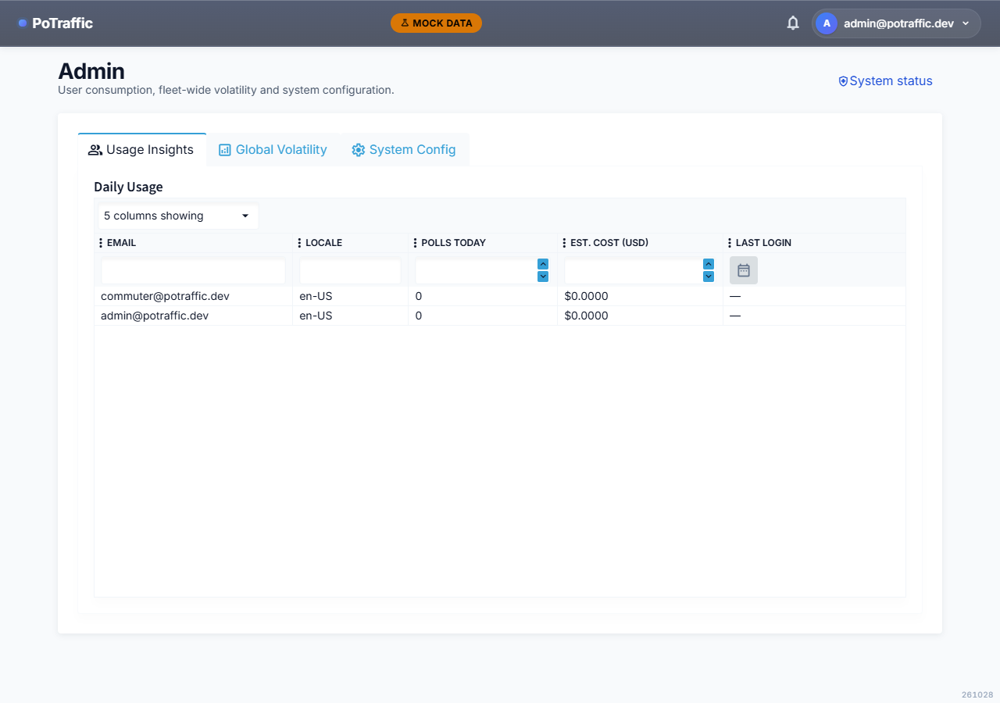
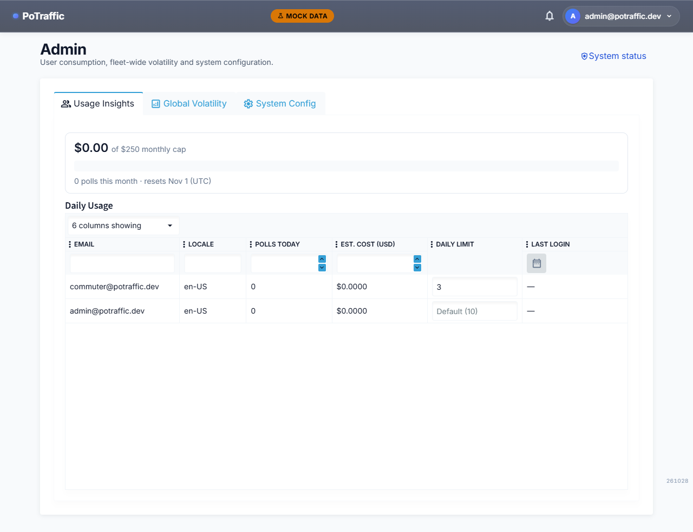
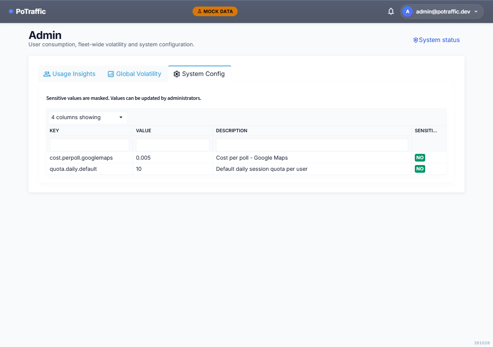
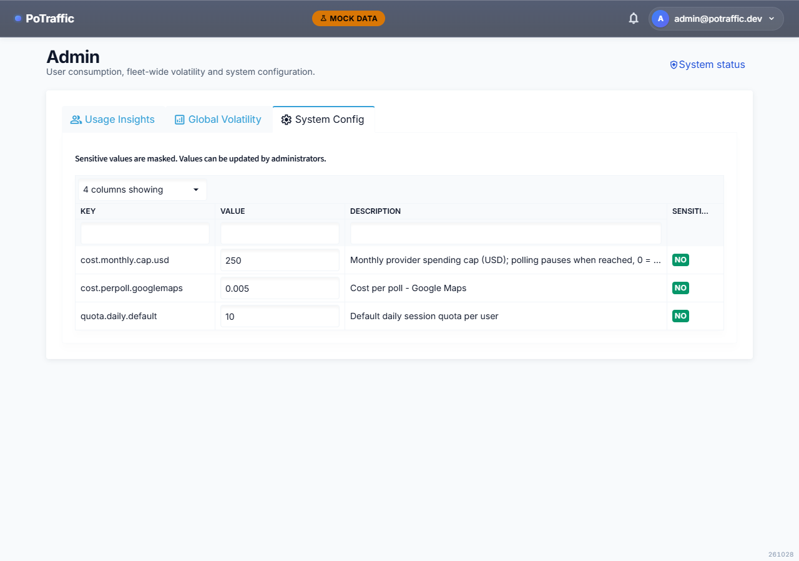
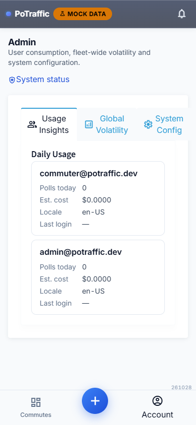
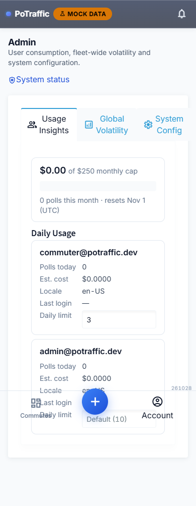

Admin: per-user limits and spending cap
2026-10-28. "Before" is commit 3312e53. "After" was captured after an admin set the cap to $250 and gave commuter@potraffic.dev a limit of 3 through the new endpoints.
Usage Insights
- newSpending card: this month's provider spend against the monthly cap, polls this month, and when it resets. Turns red and says polling is paused once the cap is reached.
- new"Daily limit" column: type a number to give a user their own daily session limit; clear it to put them back on the default shown in grey.


System Config
- changedThe daily default, per-poll cost and the new monthly cap are editable in place; changes save when you leave the field. Other rows stay read-only, and the server rejects invalid values.


On a phone


The bottom navigation overlapping the last card is an artifact of the full-page capture; on a real phone the page scrolls under it. Not shown: "Check now" saying the month's budget is used up when the cap is reached.